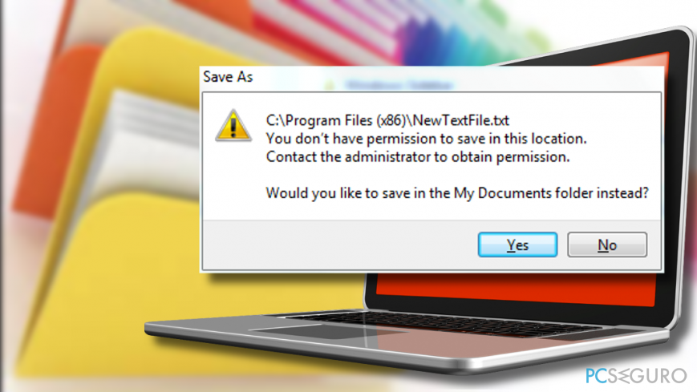
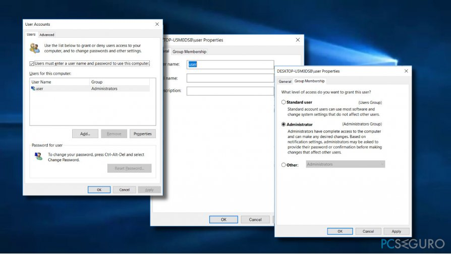
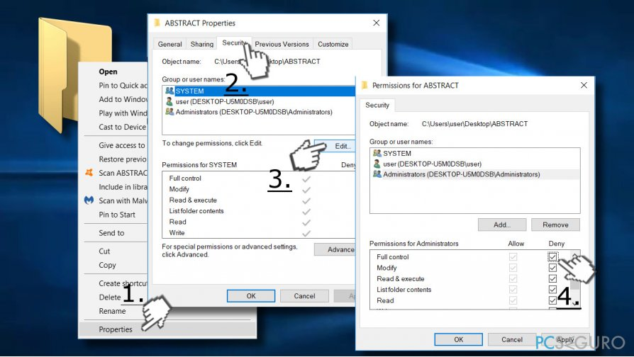

Pregunta
Problema: ¿Cómo solucionar el error "No tienes permiso para guardar en esta ubicación" en Windows?
Cada vez que intento guardar archivos en cualquier carpeta, Escritorio, Documentos, Imágenes, OneDrive o en cualquier otra ubicación, me aparece un error que declara «No tienes permiso para guardar en esta ubicación», etc. He intentado guardar en carpetas alternativas, pero me aparece el mismo error una y otra vez. Es un círculo vicioso y no sé cómo deshacerme de él. ¿Podrías ayudarme por favor?
Respuesta resuelta
«No tienes permiso para guardar en esta ubicación» es una notificación pop-up que puede aparecer en cualquier versión del sistema operativo Windows cuando el sistema se encuentra un problema con los Permisos. Ocurre cuando el usuario del PC marca el archivo y lo coloca o lo copia y pega en una localización que desea. El menaje completo declara:
C:/ Program Files (x86)/NewTextFile.txt
You don't have permission to save in this location
Contact the administrator to obtain permissionWould you like to save in the My Documents folder instead?
El parche y la localización alternativa difiere en cada caso. Hay muchas razones por las que la gente puede encontrarse el error «No tienes permiso para guardar en esta ubicación». Inicialmente, se registró en Windows 7 y luego también migró a Windows 8. De acuerdo con los reportes de la gente, las versiones antiguas mostraban esta notificación debido a permisos pendientes, por lo que la mejor solución es dar permiso y control completo a los Administradores sobre las carpetas problemáticas.

Dar permiso para modificar una carpeta particular es una solución complicada si el error «No tienes permiso para guardar en esta ubicación» ocurre cuando intentas guardar en muchas carpetas diferentes. En este caso, deberías intentar añadir tu cuenta al grupo de Administradores del sistema.
El Control de Cuentas del Usuario (UAC) es otra características que puede desencadenar este y similares problemas. El UAC es una característica de seguridad nueva actualmente disponible solo en sistemas Windows 10. A pesar de su utilidad, Microsoft admite que la actividad del UAC puede algunas veces ser muy agresiva y causar errores como «No tienes permiso para guardar en esta ubicación».
En algunos casos, la optimización completa de Windows con Reimage es suficiente para solucionar el error «No tienes permiso para guardar en esta ubicación» y similares. Este escenario es posible en aquellos casos en los que Windows funcione mal debido a archivos del sistema o registros corruptos o por malware. De otro modo, puedes necesitar solucionar el error «No tienes permiso para guardar en esta ubicación» siguiendo este tutorial:
Métodos que ayudan a solucionar el error «No tienes permiso para guardar en esta ubicación»
Para empezar, es recomendable ejecutar el Solucionador de Problemas de Windows. Mucha gente ha reportado que esta herramienta ha detectado automáticamente los errores y ha solucionado los problemas. Sí, sin embargo, el problema no ha quedado resuelto, deshabilita los antivirus de terceras partes si estás usando uno. Los programas Kaspersky y Avast pueden haber cambiado los ajustes de seguridad automáticamente o puede que algunas malas funcionalidades de esos programas pueda estar causando el error «No tienes permiso para guardar en esta ubicación». Si aún te estás encontrando con este problema, entonces el único modo es modificar manualmente los ajustes de seguridad:
Método 1. Dar permiso al usuario actual
- Pulsa las teclas Windows + R para abrir el Ejecutar.
- Escribe netplwiz y pulsa Enter.
- Cuando el cuadro de diálogo de la Cuenta del Usuario se abra, haz click en la pestaña Usuarios.
- Localiza la cuenta con la que te encuentres el error y haz click en ella.
- Selecciona Propiedades y comprueba la casilla del Administrador.
- Click en Aplicar y en Aceptar para guardar los cambios.
- Finalmente, reinicia tu PC.

Método 2. Dar control completo a los Administradores sobre carpetas particulares
- Click derecho en la carpeta problemática y selecciona Propiedades.
- Abre la pestaña de Seguridad y selecciona Editar.
- Selecciona Administradores y marca Control Completo en la columna de Permitir.
- Click en Aplicar y en Aceptar para guardar los cambios.
En caso de que el control completo ya haya sido dado, selecciona cualquier otra opción de la columna Denegar y luego selecciona de nuevo Control Completo en la sección de Permitir.

Método 3. Cambiar el propietario de la carpeta afectada
- Click derecho en la carpeta que genera el error «No tienes permiso para guardar en esta ubicación».
- Selecciona Propiedades y abre la pestaña de Seguridad.
- Click en Avanzado para encontrar el Propietario.
- Selecciona el botón de Cambiar al lado de Propietario y escribe su nombre de usuario.
- Click en Cambiar Nombres y pulsa Enter.
- Comprueba Reemplazar propietario en las subcarpetas y objetos y haz click en Aceptar.
- Si aparece el mensaje «¿Quieres reemplazar los permisos del directorio con permisos que te proporcionan un control total?», pulsa Sí para continuar.
- Tras esto, pulsa el botón Editar y haz click en tu nombre de usuario.
- Selecciona Control Completo y haz click en Aceptar.
- Pulsa Aplicar y Aceptar para guardar los cambios.
- Reinicia tu PC para activar los cambios.
Método 4. Deshabilitar el Control de Cuentas del Usuario
- Pulsa las teclas Windows + S para abrir la Búsqueda.
- Escribe Cuenta de Usuario y selecciona la opción de Cambiar los ajustes del Control de Cuentas del Usuario.
- Mueve el control deslizante a No notificar nunca y haz click en Aceptar para guardar los cambios.

Son suerte, estos pasos te habrán ayudado a solucionar con éxito el error «No tienes permisos para guardar en esta localización». Si ninguno de los métodos te ha funcionado, por favor, háznoslo saber y analizaremos tu caso individualmente.
Repara tus Errores automáticamente
El equipo de pcseguro.es está intentando hacer todo lo posible para ayudar a los usuarios a encontrar las mejores soluciones para eliminar sus errores. Si no quieres comerte la cabeza con técnicas de reparación manuales, por favor, usa los programas automáticos. Todos los productos recomendados han sido probados y aprobados por nuestros profesionales. Las herramientas que puedes usar para solucionar tu error se encuentran en la lista de abajo.
Prevén que páginas webs, ISP y otras partes te rastreen
Para permanecer completamente anónimo y prevenir que ISP y el gobierno te espíe, deberías emplear la VPN Private Internet Access. Te permitirá conectarte a internet siendo completamente anónimo encriptando toda la información, previniendo rastreadores, anuncios, así como contenido malicioso. Más importante, pondrás fin a las actividades ilegales que la NSA y otras instituciones gubernamentales realizan sin tu consentimiento.
Recupera tus archivos perdidos rápidamente
Las circunstancias imprevistas pueden ocurrir en cualquier momento mientras usas el ordenador: puede ser por un corte de luz, por un pantallazo azul de la muerte (BSoD) o porque actualizaciones aleatorias de Windows puedan reiniciar tu ordenador cuando estás lejos unos minutos. Como resultado, el trabajo de la escuela, tus documentos importantes y otros datos pueden perderse. Para recuperar tus archivos perdidos, puedes usar Data Recovery Pro – busca a través de las copias de los archivos que aún están disponibles en tu disco duro y los recupera fácilmente.

Gabriel E. Hall es una experta solucionadora de problemas que ha estado trabajando en la industria de la tecnología de la información durante años.


![us]()